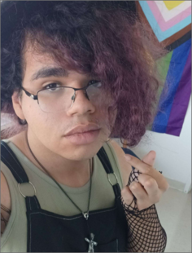

About Me
 I have had a passion for gaming for as long as I can remember. I remember playing Pokemon Black as a kid and that was when I decided that I wanted to make something as beautful as that game would have lasting effects on my childhood.
My journey to become a Game Designer started in High School when I took my first ever coding classes where I learned Basic Phyton and HTML. I also started learning how to design levels in those classes in Roblox where I used basic coding. These early classes really gave me reasurence that this was the path for me. I had so much fun in these classes, I remember looking forward to these classes everyday, working and experimenting on my projects in and out of class.
The next stop on my journey was college. I began to attend Illinois State University in 2022 where I learned the majority of the skills I have today. My passion only growing as I pursed my higher education. I started working on Analog games, learning how to craft fun mechanics and create unique character concepts. Even though I am only in my first year, I feel I have already made immese progress that will only make me better and better at making games and hopefully inspire other people just like how Pokemon Black inspired me.